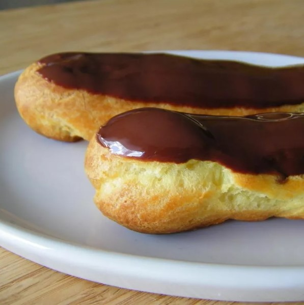

Eclairs

Description
These eclairs are always a hit! My family loves these eclairs and requests them
all the time. I usually make them as dessert whenever we have company coming.
Ingredients
Choux Pastry:
- 1 cup water
- ½ cup butter
- 1 cup all-purpose flour
- ¼ teaspoon salt
- 4 large eggs
Filling:
- 2 ½ cups cold milk
- 1 (5 ounce) package instant vanilla pudding mix>
- 1 cup heavy cream
- ¼ cup confectioners' sugar
- 1 teaspoon vanilla extract
Icing:
- 2 (1 ounce) squares semisweet chocolate
- 2 tablespoons butter
- 1 cup confectioners' sugar
- 1 teaspoon vanilla extract
- 3 tablespoons hot water
Steps
-
Preheat the oven to 450 degrees F (230 degrees C). Grease a cookie sheet;
set aside.
-
Make choux pastry: Combine water and butter in a medium pot. Bring to a boil,
stirring until butter melts completely. Reduce heat to low; add flour and salt.
Stir vigorously until mixture leaves the sides of the pan and begins to form a
stiff ball. Remove from heat.
-
Add eggs, one at a time, beating well after each addition until incorporated.
Using a spoon or pastry bag fitted with a No. 10 or larger tip, spoon or pipe
dough onto the prepared cookie sheet in 1 1/2x4-inch strips.
-
Bake in the preheated oven for 15 minutes. Reduce heat to 325 degrees F
(165 degrees C) and continue baking until the bottoms sound hollow when
lightly tapped, about 20 more minutes. Cool completely on a wire rack.
-
Make filling: Combine milk and pudding mix in a medium bowl according to package
directions. Beat heavy cream with an electric mixer in a separate medium bowl
until soft peaks form. Beat in confectioners' sugar and vanilla. Fold whipped
cream into pudding.
-
Cut tops off of cooled pastry shells with a sharp knife. Fill shells with
pudding mixture and replace tops.
-
Make icing: Melt chocolate and butter in a medium saucepan over low heat.
Stir in confectioners' sugar and vanilla. Stir in hot water, 1 tablespoon at a
time, until icing is smooth and has reached desired consistency. Remove from
heat and cool slightly.
-
Drizzle chocolate icing over filled eclairs. Store in the refrigerator until serving.